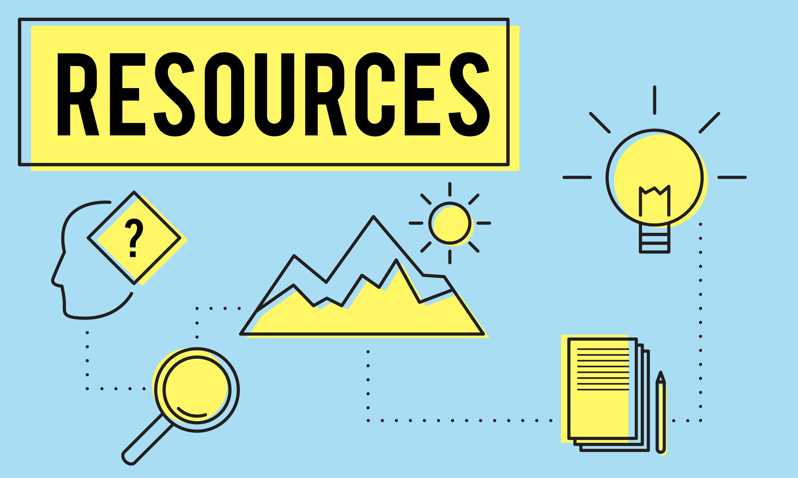

☰ Menu

Resource
An essential aspect of learning something compelling is access to the right resources, and computer studies are not old ones.
Getting the best help to learn computer science is one of the most critical aspects of the success of your course. Internet walls are one of the best tools to offer valuable accessories and learning opportunities to gain the required skills.
Some of the significant resources available for this course include W3Schools, a site for students interested in practical programming skills and coding of languages.
They provide students with tutorials on AJAX, SQL, ASP, JavaScript, and HTML codes. Codecademy is another resource that offers the best computer science education to students who want to learn to code at a higher professional rank.
For self-directed studies, the sites provide free courses, and if there is a need for professional help, the system is available at a fee.
You tube offers technical videos with illustrations where students understand the course through the provided videos. Professionals in computer science give tutorials using you tube channels to the students.
It offers the best direction since there is an option for repletion if one does not grasp the content on the first attempt. GitHub is a destination resource center with open-source code where learners can access various programmers, developers, and computer scientists with completed projects for references during learning.W
ith the help of these resources, learners can create their assignments by making monthly payments. Easy coder is a mobile app that helps learners to gain computer science skills, especially JAVA, which uses short period interactive lessons, and questions and offers challenges in programming ideas.
Easy code allows learners to test their coded work as they continue learning